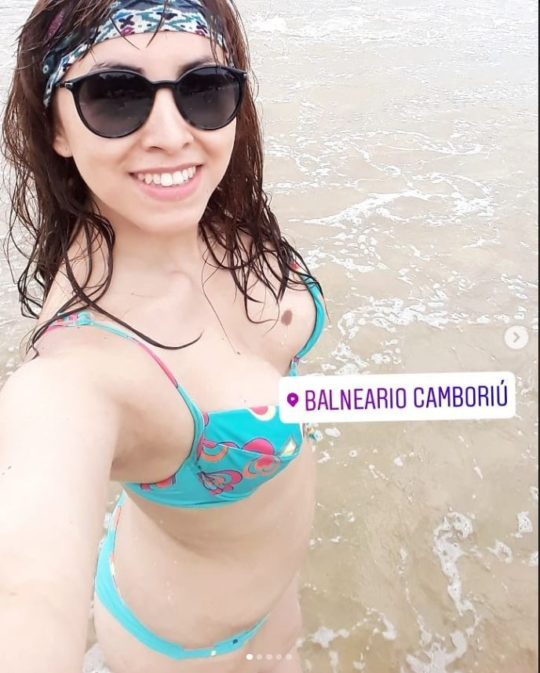
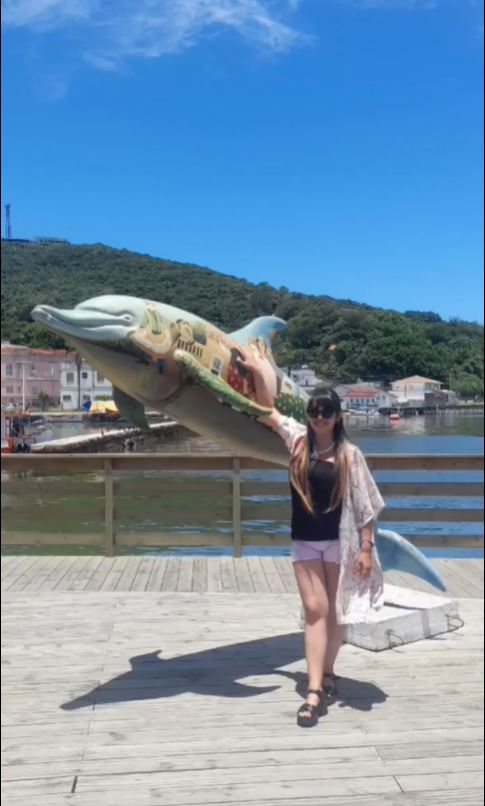
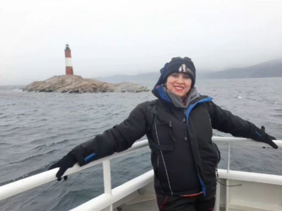
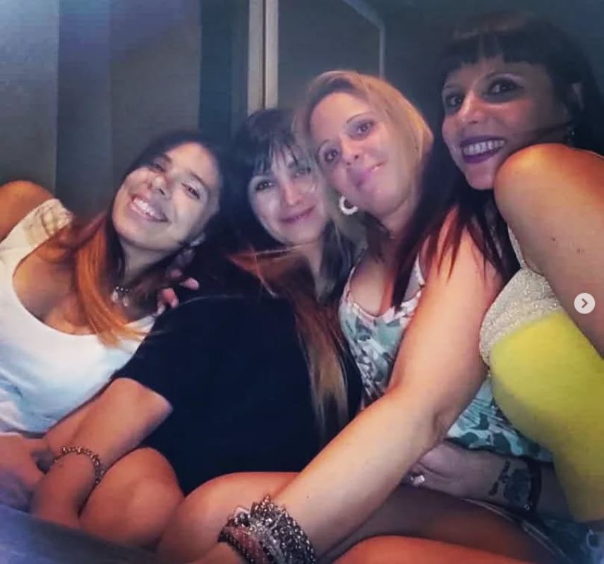

Sos la primera que empezo a viajar por el mundo, y que ironia que a todos nos daba miedo que estes sola en Sarandi, pero cuando te ibas en micro a Brasil pasando por Paraguay nadie se preocupaba, jajaja
Conociste el fin del mundo, o el fin del mundo te conocio a vos???sabemos que estabas cagada de frio pero aun asi sonreiste para las fotos, drguramente pensaste que ivas a probar milanesas de pinguino
Creo que estabas pensando en probar sushi de delfin, se que siempre pensas en comidas porque tu Instagram tiene mas fotos de platos que de personas.
Es bueno que hayas encontrado personas que te soporten ya que no es facil, esas chicas tienen mucha paciencia.
Haz vivido hermosas experiencias, viajaste mucho y queda mucho por descubrir, se que te encanta conocer lugares nuevos y no tenes miedo de participar en un tour o de una marcha de izquierda, jajajaja,